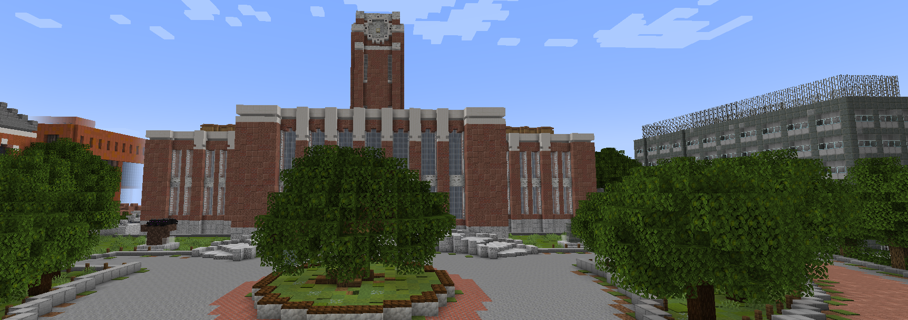
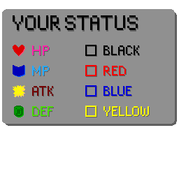
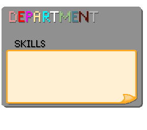
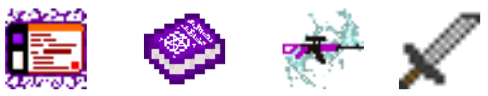
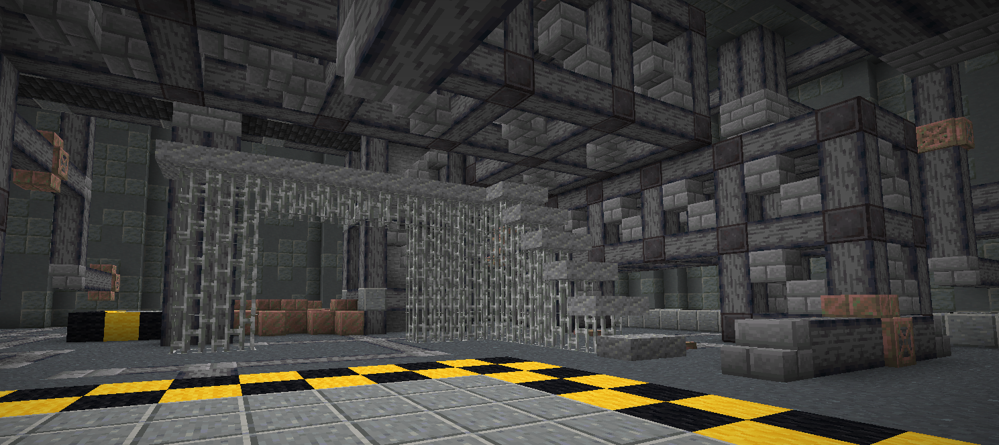
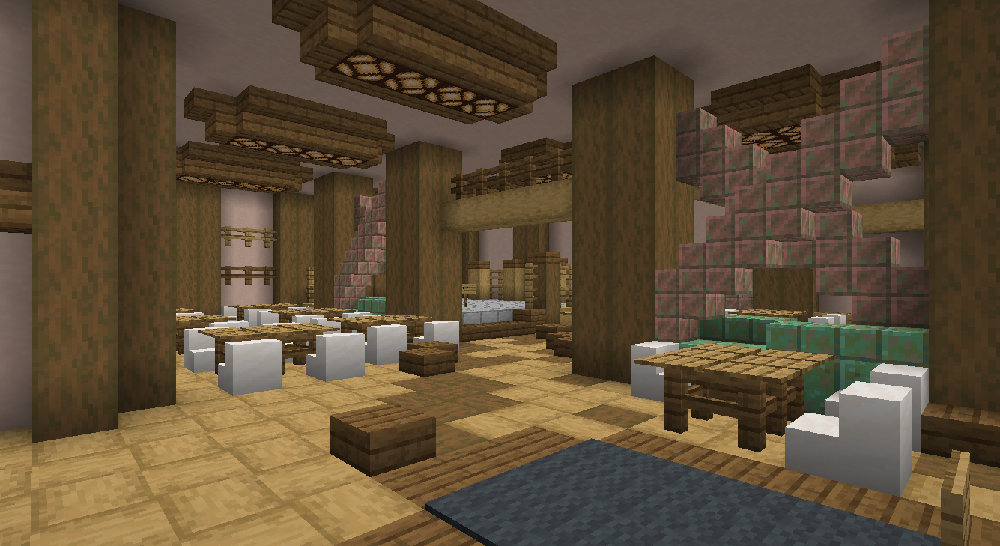
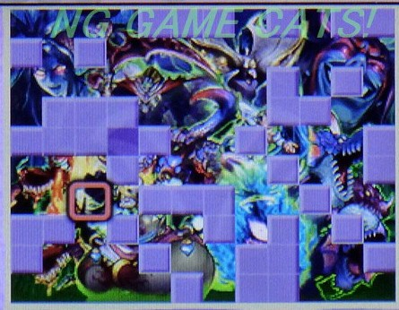

京大クエスト
~失われたキャンパスライフ~
イメージ共有のための企画書 2025/6/26 社不
コンセプト
見知ったキャンパス、京大あるあるネタによる楽しさ
+
ファンタジックな世界で成長し敵を打倒する喜び
↓
日常の世界を特殊能力で非日常に過ごす楽しさ
どんどん成長して強い敵を倒す(RPG本来の)楽しさ
世界観
- ストーリーの導入: 憧れの京都大学に合格した主人公。しかしそこは、闇の組織「IRAS」に支配されていた。主人公は京都大学を解放するため、戦いを決意する。
- ゲームの目的: ダンジョンやクエストを攻略してステータスを上げ、ラスボスを倒す。
- 雰囲気: 「京大らしさ：ファンタジー = 3：7」くらいのイメージ。
- フィールド: キャンパスには敵が跋扈しており、ダンジョン内はさらに危険。 プレイヤーはステータスを上げ、スキルや装備を揃えて立ち向かう。
- 探索要素: オープンワールドだが、エリア毎に難易度勾配が設定されている。順当に進めるのが基本だが、上級エリアの隠しアイテムを回収して一気に強くなることも可能。
- 隠し要素: キャンパス内には隠し単位やアイテムが多数存在。クリアだけなら不要だが、全力で隠されている。

学部（ジョブシステム）
いわゆるジョブシステム。拠点で気軽にローコストで変更可能。 設定中の学部によってステータスや対応武器のダメージが強化されます（例：理学部だと青(魔法)が強化）。
| 学部 | イメージ |
|---|---|
| 理 | 紙耐久高火力のメイジ。魔法攻撃はかなり強い |
| 工 | 高耐久低火力のタンク。敵を引き付けたり守りを固めるスキルを持つ |
| 農 | 耐久よりのサモナー(動物など召喚)。オールラウンダーよりのサポーター |
| 医 | 低耐久のヒーラー。攻撃も多少できる |
| 薬 | やや低耐久でかなり低火力のバッファー。全体バフスキルを持つ |
| 教育 | 低耐久高火力のバーサーカー。物理攻撃はかなり強い |
| 法 | 低火力のデバッファー。敵を弱体化させれば耐久は随一 |
| 経済 | ステータスは低いが器用で特殊能力(お金をたくさん GETできるなど)を持つ |
| 文 | 一発屋。攻撃力以外全体的に能力が低いが、一発逆転の大技を持つ |
| 総人 | 少しステータスが低いが、例外的にすべての学部のスキルを扱える |
ストーリー
世界支配を目論む闇の組織「IRAS」。主人公はIRAS打倒のため、京大の精霊の助けを借り、黒幕である機構長が陣取る時計台の結界を解くべく各地のダンジョンを攻略する。 その道中で、機構長の「思考同調装置」の開発といった悪行や目的が徐々に明らかになる。
最後に倒した幹部は、機構長の亡き娘を素体にした怪物だった。機構長は「自由を主張する京大生」に娘を殺された恨みから、人類の思考統一を企てていたのだ。
- NORMAL END: 最終決戦で機構長を倒し計画を阻止。しかし、共に行動した精霊が実は機構長の娘の魂であり、父を失った悲しみに暮れてしまう。
- TRUE END: 機構長も含め、全ての魂を救うことはできるのか...!?
ゲームフロー
単位を取得(ミニクエスト)
ステータスUP &
新スキルGET
新スキルGET
ダンジョンを攻略
強い装備やアイテムを入手
全ダンジョンクリア &
規定単位数獲得
規定単位数獲得
ラストダンジョン(時計台)
固定マップで、どんどん
登っていく。時計台の頂上か
ら異世界に移動
登っていく。時計台の頂上か
ら異世界に移動
ラスボスに挑戦
実績達成を目指しやりこみ
(高難度クリア、単位コンプ、
隠し発見などなど)
(高難度クリア、単位コンプ、
隠し発見などなど)
クリア後の世界
ターゲット層
- ◎ メインターゲット: Minecraftの基本的な操作は理解しているがプロではないプレイヤー。京大に興味があり、RPGが好きな層。
- ☐ サブターゲット: Minecraftの熟練者や、京大を知らない人でも楽しめる。
- △ 対象外かも: Minecraftが苦手な人や、RPGのレベル上げ作業が苦痛に感じる人。
ステータス
標準ステータス
HP, MP, 攻撃力, 防御力, 魔法防御力
HP, MP, 攻撃力, 防御力, 魔法防御力
特殊ステータス
属性値（赤, 青, 黄）があり、対応する攻撃を強化。
属性値（赤, 青, 黄）があり、対応する攻撃を強化。
その他
攻撃範囲やスキルCTなど、スキルや装備でのみ変化するものもある。
攻撃範囲やスキルCTなど、スキルや装備でのみ変化するものもある。
属性システム
単位取得によって各属性値が成長します。
| 属性 | 分類 | 対応単位・武器 | 対応スキル |
|---|---|---|---|
| 赤 | 物理 | 人社単位・近距離武器 | 肉体系のスキル |
| 青 | 魔法 | 自然単位・遠距離武器 | 魔法・精神系のスキル |
| 黄 | 特殊 | 一部単位・なし | 消費MPやCTが大きい大技 |
| 黒 | 例外 | 原則なし | 汎用スキルやステータスが関係ないスキル |
戦闘システム
- プレイヤーのHP, MPは自然回復する。
- 攻撃には属性があり、敵には属性耐性があるため、敵によって装備やスキルを変える戦略が必要。
- 敵の攻撃には物理・魔法の区分がある（例：教育学部ダンジョンは物理の敵が多い）。
- 戦闘の体感は「フルダイヤ装備 vs Hardのゾンビ」にスキル戦を加えたイメージ。 しっかり殴り合う感覚で、囲まれると厳しいバランス。
- 適正レベルなら、連発できる攻撃で敵を3発程度で倒せる。
単位（ミニクエスト）
- 内容: いわゆるミニクエスト。専用の部屋で様々なチャレンジに挑戦します。（例：歴史学Ⅰ→ ピラミッド型迷路の攻略など）
- アクセス: キャンパス内の建物の入口から、対応する単位取得部屋に移動できます。（例：教育学部棟→教育系の単位）
- 報酬: 単位を取得すると、予め指定されたステータスが少し上昇します。（例：数学系の単位ならMP+5, 青属性+1など）
- 区分: 単位には「専門」「共通」の区分があり、取得できるスキルもそれぞれの区分に対応します。
スキル
- 取得方法: 対応する単位を取得すると入手できます。（例：歴史学Ⅰの単位を取るとスキル「血塗られた歴史書」をGET）
- 装備: スキルは同時に複数セット可能です。
- パラメータ: 各スキルには属性、クールタイム（CT）、消費MPが存在します。
- 専門スキル: 「共通スキル」はいつでも使用可能ですが、「専門スキル」はその学部でないと使用できません。（例：理学部なら共通スキルと理学部専門スキルのみ使える）
- 熟練度: 単位取得以外でも、特定のスキルを一定回数以上使用することで新たなスキルを習得できる場合もあります。


武器
- 入手方法: ダンジョンの攻略報酬、敵からのドロップ、拠点での購入などで入手できます。
- 効果: 装備するとステータスが上昇したり、攻撃に様々な追加効果が付与されたりします。（例：毒付与、リーチ延長、攻撃速度上昇など）
- 武器種: 全9種の武器カテゴリがあり、それぞれが固有の特性を持っています。（※総合人間学部に対応する武器種はありません）


| 武器種 | 対応学部 | 威力 | 範囲 | 攻撃速度 | 特殊効果 | 備考 |
|---|---|---|---|---|---|---|
| 杖 | 理 | 5 | 3 | 1 | 4 | 効果は攻撃的なもの中心 |
| 弓 | 農 | 1 | 5 | 2 | 5 | バニラの弓に効果がつく |
| 槌 | 工 | 6 | 2 | 1 | 4 | 通常攻撃が範囲hitするなど |
| ナイフ | 医 | 4 | 1 | 5 | 3 | 持っている間SPD上昇など |
| 針 | 薬 | 1 | 5 | 3 | 4 | 特殊効果は軽いデバフ中心 |
| 斧 | 教育 | 7 | 2 | 3 | 1 | デバフ持ちだが一撃が強力 |
| 剣 | 法 | 4 | 4 | 4 | 1 | 癖がなく使いやすい |
| 銃 | 経済 | 1 | 5 | 5 | 2 | 銃PvPよりも威力激減 |
| 本 | 文 | 3 | 3 | 1 | 6 | 効果は補助的なもの中心 |
ダンジョン
ダンジョンは、ボス部屋・ギミック部屋・報酬部屋を含む数十の部屋が自動でランダム生成される。 ボスを倒せばクリアとなり、お金や強力な装備が手に入る。
- ギミック部屋: 論理パズルや特殊な戦闘など、ギミックを解かないと進めない。
- 攻略順: 農→工→薬→教→経→法→医→理→文→総の順で攻略していく想定。
- ストーリー進行: ダンジョンを進めるごとに、黒幕の正体や目的が明かされていく。

敵
- 出現場所: キャンパス内やダンジョン内に出没します。（イベント中は消滅）
- 強さ: ゲーム後半になるほど、ステータスが高い、あるいは特殊能力が厄介な敵が増えていきます。
- ドロップアイテム: 一部の敵は倒すとアイテムをドロップします。
（例：はぐれ浪人生は高速で移動しすぐ消滅するが、倒せればお金をたくさん貰える。警備員を倒すと警備員の服GET） - 見た目: 基本的にはバニラのMinecraftに準拠しますが、後半の敵は弱点が分かりやすいようにテクスチャを変更する予定です。
ボス
- 存在: 各ダンジョンには強力なボスが存在します。
- 攻撃: ボスは固有の攻撃を複数行います。
- モデル: ボスの3Dモデルは独自に作成する予定です。
拠点：中央食堂
IRASに対抗する組織のアジト。 ここでは多岐にわたる活動が可能です。
図鑑
武器・防具の性能や入手場所を確認
武器・防具の性能や入手場所を確認
倉庫
アイテムを収納
アイテムを収納
学生窓口
学部の解放・変更
学部の解放・変更
スキル相談窓口
スキルの設定・スロット解放
スキルの設定・スロット解放
証明書自動発行機
進捗状況の確認
進捗状況の確認
キャリアセンター
ステータスの振り直し
ステータスの振り直し
学生保健室
難易度の変更
難易度の変更
購買
アイテムの売買
アイテムの売買
留学生ラウンジ「きずな」
ガチャで情報収集
ガチャで情報収集
鍛冶屋
レア素材を最強装備と交換
レア素材を最強装備と交換
実績確認所
NORMAL END後に解放
NORMAL END後に解放

やりこみ要素：実績システム
「隠し単位を全て見つける」「最強防具をフル装備する」など、クリア以上のことを要求する実績を10個ほど用意。 実績を一つ達成するごとに、ボスたちが笑っている幸せなイラストの一部分が解放されていきます。

今後の作業
今後必要となる作業は次の通りです。（まだ想定の段階なので変化する可能性があります）
- 建築: ラスボス戦エリア、時計台内部、単位取得部屋（40時間*人)
- モデル: 銃追加作成、ボスアニメーション修正（優先度低）（5時間*人）
- テクスチャ: 武器防具アイテムテクスチャ、各種レイアウト画面テクスチャ、実績解除の絵、一部モブ新規テクスチャ（作るなら）（30時間*人）
- システム: たくさん（たくさん）
- シナリオ: ストーリーの肉付け・調整（10時間*人）
- デザイン: 具体的なアイデア出し（敵/武器/防具/アイテム/単位のテキストとかアイデアとか）（20時間*人）
- テストプレイ: たくさん